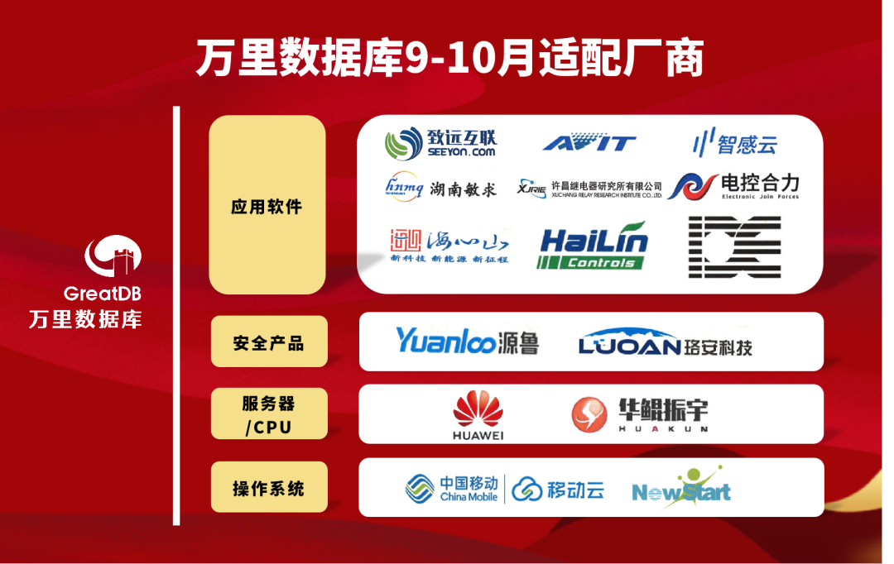
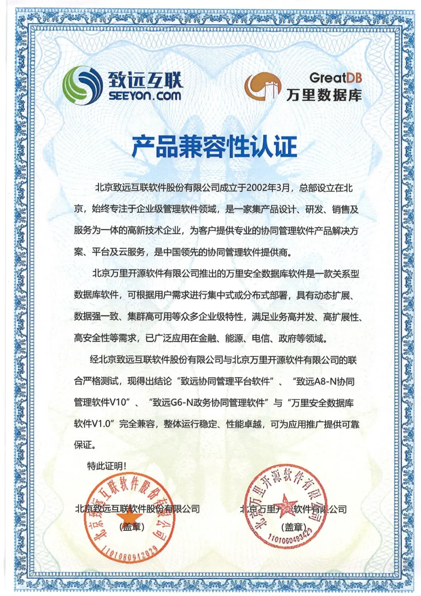
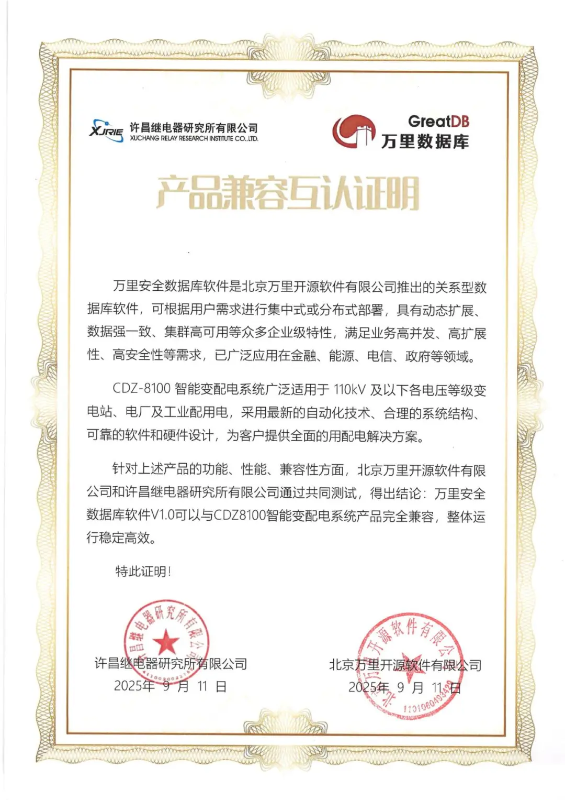
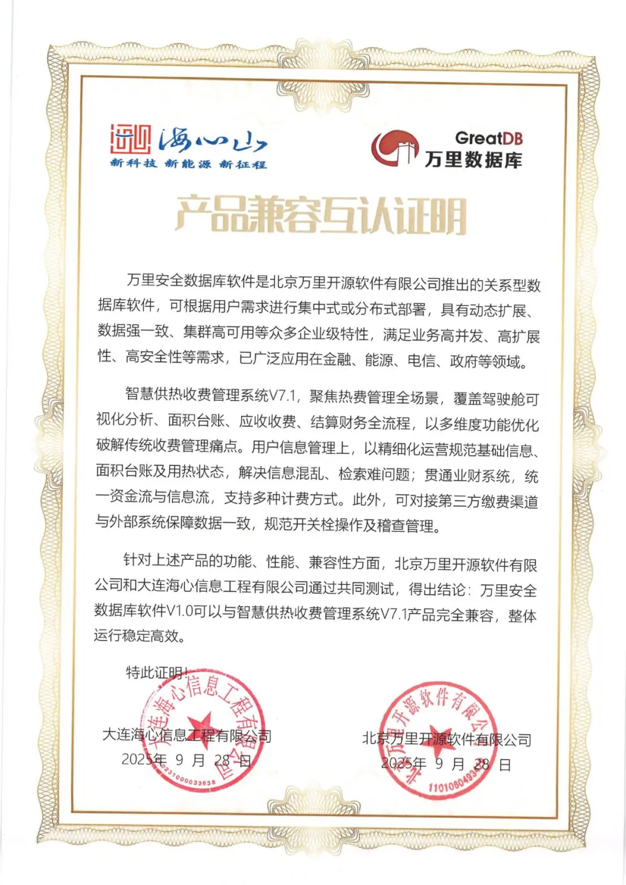
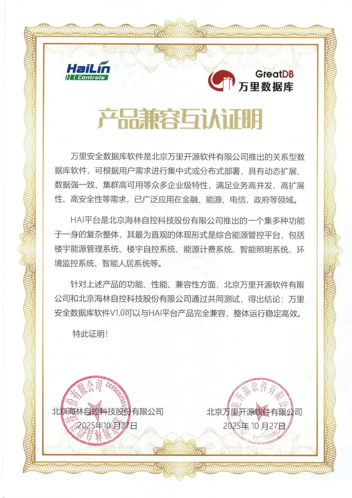
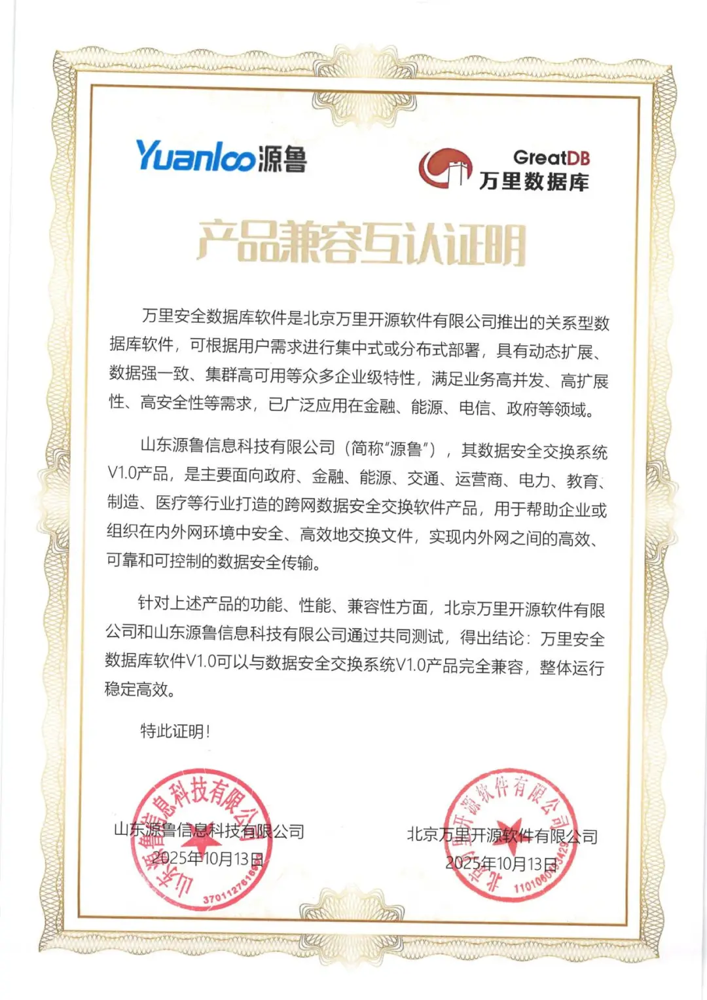
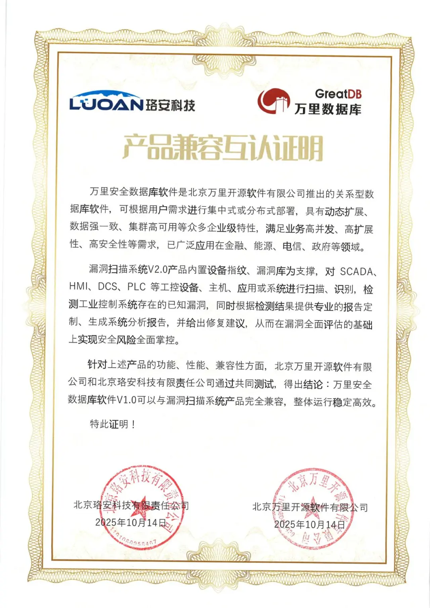
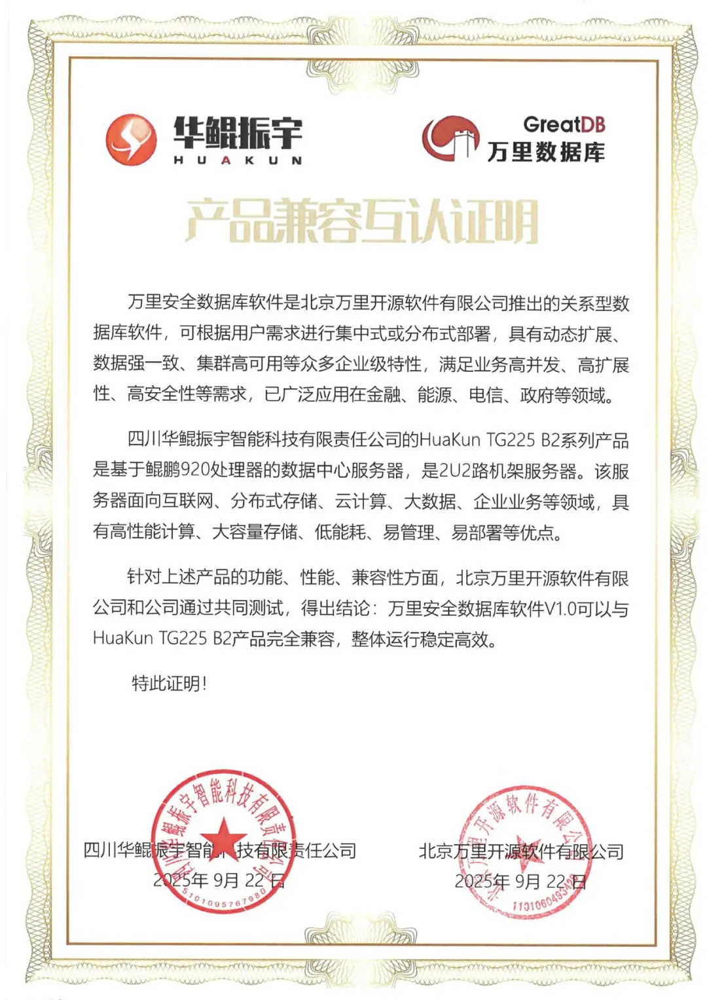
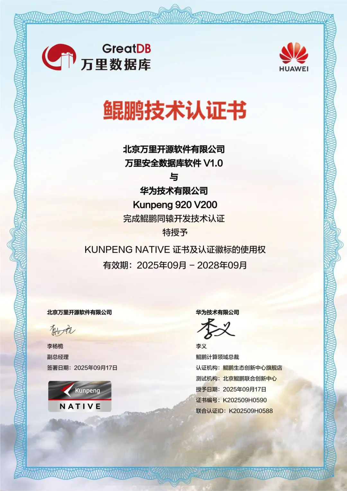
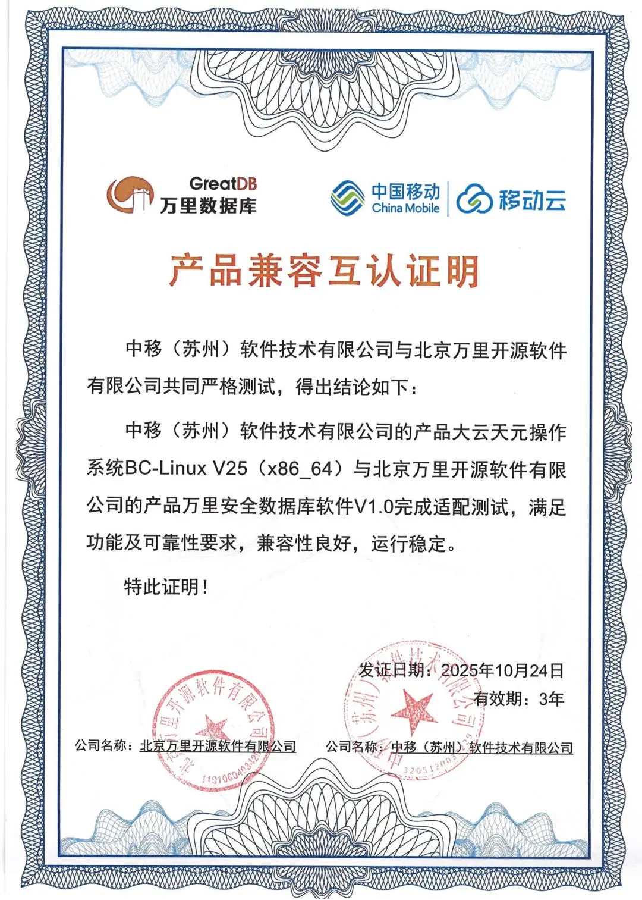

兼容月报 | 生态突破 万里数据库携手15家伙伴筑牢数字生态基石
生态共融，方能基业长青。
2025年9-10月，万里数据库生态建设取得重要进展。我们与应用软件、安全、服务器/CPU、操作系统四大领域的15家生态伙伴完成兼容互认证，标志着国产化生态正从"单点突破"迈向"系统推进"的新阶段。这一系列合作成果，为各行业数字化转型提供了更完整、可靠的国产化解决方案。

生态协同纵深推进 全栈能力持续完善
在本轮兼容认证中，万里安全数据库软件GreatDB与五大领域的生态伙伴完成了深度适配，覆盖技术全栈，彰显国产化生态体系的成熟度与包容性。
应用软件领域，万里数据库与致远互联、佳创视讯、许昌继电器、智感云、湖南敏求、大连海心、电控合力、海林自控、德奥思 9家企业的核心业务系统完成兼容认证。特别是与致远互联协同管理软件的深度适配，实现了在信创环境下的全栈优化，为党政、央企等用户提供了高可靠性的协同办公解决方案。




安全领域，万里数据库与山东源鲁、珞安科技完成兼容互认证。这些合作构筑了立体的数据安全防护体系，从威胁检测、安全审计到数据加密，使GreatDB的全生命周期安全防护能力得到全面提升，为关键信息基础设施保护提供可靠技术支撑。


服务器/CPU领域，万里数据库与鲲鹏、华鲲振宇完成全栈适配。基于鲲鹏处理器的多核异构架构，GreatDB充分发挥了分布式数据库的事务处理能力，单集群性能实现大幅提升，为关键行业的核心系统提供高性能支撑。


操作系统领域，万里数据库与中移苏研院、新支点完成兼容认证。此次适配进一步丰富了GreatDB在国产操作系统领域的兼容性，为运营商体系下的系统兼容性奠定了技术基础，为行业用户提供高可靠性技术栈选择。

生态共建 促进技术协同创新
本轮生态建设不仅验证了技术兼容性，更体现了协同创新的价值。通过深度适配，我们与伙伴共同优化了从底层驱动到应用层的全链路性能，特别是在资源调度、数据安全等关键模块取得重要进展。
在AI技术快速发展的背景下，GreatDB在设计之初就为未来智能能力的集成预留了空间。与工业控制、智能制造等领域伙伴的深度合作，也为数据库在智能制造、工业物联网等核心场景的落地奠定了坚实基础。
我们始终秉持开放理念，积极参与行业标准制定，推动测试流程标准化，助力生态伙伴快速融入国产生态圈。这种开放协作的模式，正在为整个行业创造更大价值。
当前，数字化浪潮正重塑产业格局，基础软件的创新发展至关重要。万里数据库将持续深化与生态伙伴的合作，通过技术协同和创新融合，共同构建更完善的信创生态体系。
我们相信，通过持续的开放合作，万里数据库将与更多伙伴携手推动中国基础软硬件生态繁荣发展，为数字中国建设贡献更大力量。